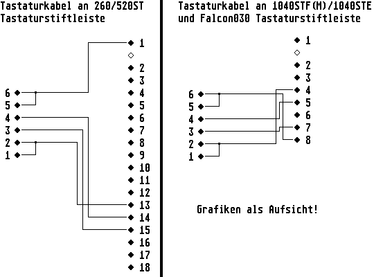

Previous
Next
TOC
Allerdings war da jemand aus Nürnberger Gefilden etwas anderer
Meinung, hier nun sein inkognito Statement:
Ein Eindämmungsfeld der Ebene 4 sollte reichen, wenn man gleichzeitig
den Verteron-Output des Gravitonrotations-Polarimeters in der seit-
lichen Sensorphalanx synchron zur Taktfrequenz des Kontrollrechners
der Bussard-Kollektoren hält - was mit einem phaseninduzierten Mus-
terpufferkonverter ohne grosse Probleme bewerkstelligt werden kann.
Allerdings sollte man schon mehrere hundert Terabyte isolinearen
Speicher für den Task reservieren, damit die Nahrungsmittelverteiler
nicht aus dem Tritt kommen.
Mr. Crusher: Energie!

Kapitel Externe Tastatur am 260/520/1040ST und Falcon030, Seite 2